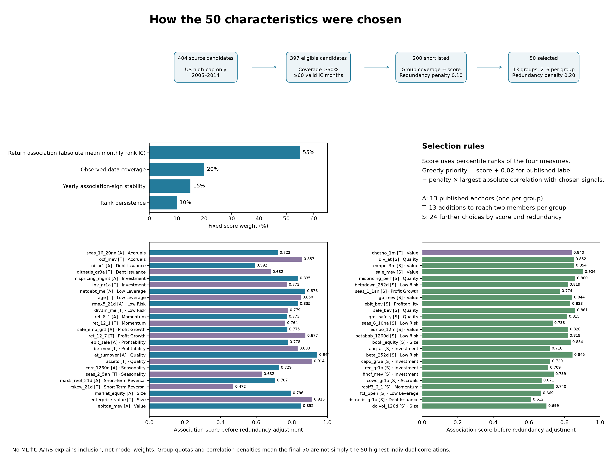
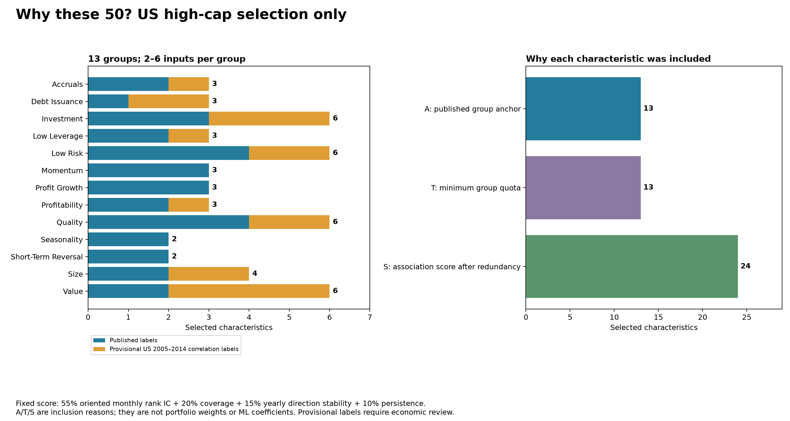
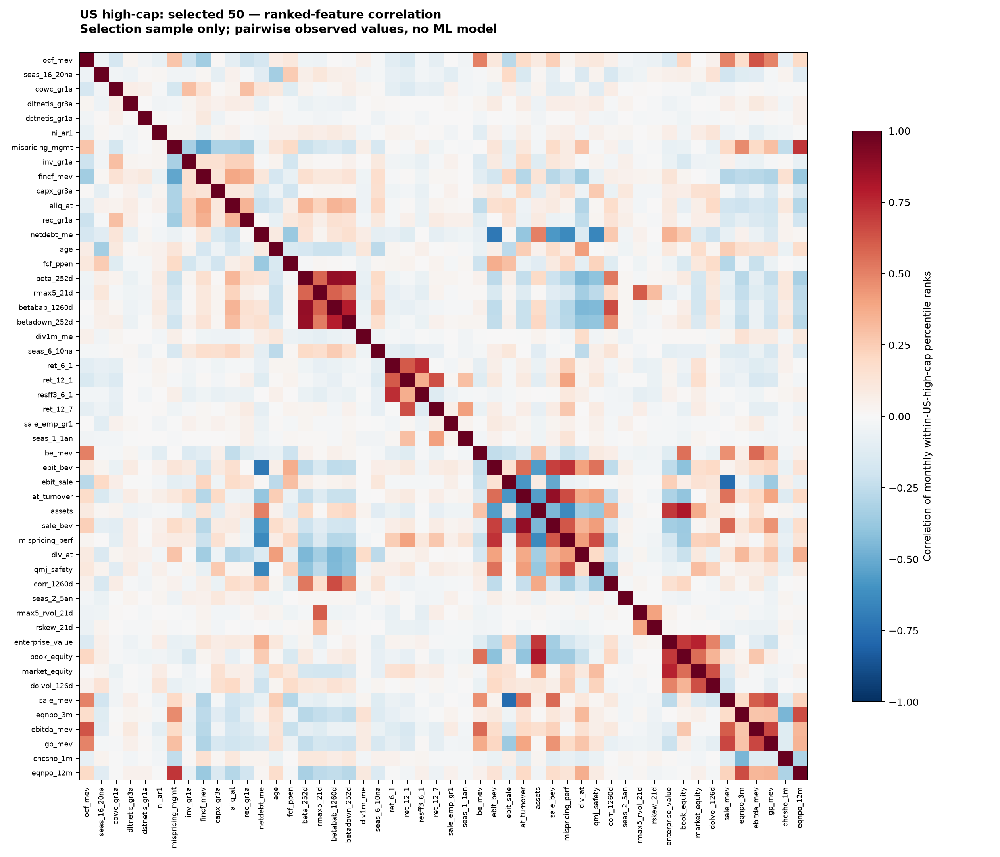

Each characteristic’s association with next-month return

Selection uses US high-cap membership only. US mid-cap and European stocks do not contribute to scores, groups, matrices or selection.

Download selection chart as PDF

A = published group anchor; T = minimum theme representation; S = score after redundancy penalty. Groups inferred using US training correlations are explicitly provisional.
The chart below switches between ranked-feature correlation and covariance. Raw-value and return-augmented matrices are downloadable too. Raw covariance magnitudes depend on units and should not be interpreted as comparable predictive importance.

Monthly cross-sectional Pearson/Spearman correlations compare contemporaneous characteristics with next-month observed excess returns. Selection score = 55% oriented rank-IC percentile + 20% coverage percentile + 15% yearly sign-stability percentile + 10% persistence percentile. Direction and provisional group assignments are estimated on 2005–2014 US high-cap data. Eligibility requires at least 60% observed feature coverage and 60 valid training IC months; validation mode also requires 60% coverage and 30 valid validation months. The greedy rule adds 0.02 for published membership and subtracts 0.20 times maximum absolute training rank-correlation with already selected inputs. Each group has 2–6 members and a published anchor. Matrices use pairwise-complete observations, at least 120 pairs, and sample covariance (n−1); pair counts are supplied. Raw NaNs and unavailable returns stay missing. Rank matrices pool within-month percentile ranks; their return column is a pooled diagnostic and differs from the equal-month average IC used for selection. Per-stock correlations are time-series associations, requiring 24 observed pairs, and are reported separately. No cumulative return target is used. Pairwise covariance matrices may not be positive semidefinite and are descriptive diagnostics, not fitted portfolio risk matrices. The dataset retains its supplied source vintage and original membership assumptions; these checks do not establish point-in-time or survivorship-free data. No outcomes from 2020 onward, other-market return outcomes, regression R², fitted forecasts or portfolio utility enter the new selection.